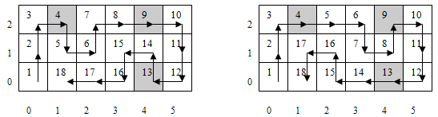

34th ICPC World Finals · Problem I
Inspired by the ice sculptures in Harbin, the members of the programming team from Arctic University of Robotics and Automata have decided to hold their own ice festival when they return home from the contest. They plan to harvest blocks of ice from a nearby lake when it freezes during the winter. To make it easier to monitor the thickness of the ice, they will lay out a rectangular grid over the surface of the lake and have a lightweight robot travel from square to square to measure ice thickness at each square in the grid. Three locations in the grid are specified as “check-in” points and the robot is supposed to radio a progress report from these points when it is one-fourth, one-half, and three-fourths of the way through its tour of inspection. To avoid unnecessary wear and tear on the surface of the ice, the robot must begin its tour of the grid from the lower left corner, designated in (row,column) coordinates as (0,0), visiting every other grid location exactly once and ending its tour in row 0, column 1. Moreover, if there are multiple tours that the robot can follow, then a different one is to be used each day. The robot is able to move only one square per time step in one of the four compass directions: north, south, east, or west.
You are to design a program that determines how many different tours are possible for a given grid size and a sequence of three check-in points. For example, suppose the lake surface is marked off in a 3 × 6 grid and that the check-in points, in order of visitation, are (2,1), (2,4), and (0,4). Then the robot must start at (0,0) and end at (0,1) after visiting all 18 squares. It must visit location (2,1) on step 4 (= ⎣18/4⎦), location (2,4) on step 9 (= ⎣18/2⎦), and location (0,4) on step 13 (= ⎣3×18/4⎦). There are just two ways to do this (see Figure 8). Note that when the size of the grid is not divisible by 4, truncated division is used to determine the three check-in times.

Note that some configurations may not permit any valid tours at all. For example, in a 4 × 3 grid with check-in sequence (2,0), (3,2), and (0,2), there is no tour of the grid that begins at (0,0) and ends at (0,1).
The input contains several test cases. Each test case begins with a line containing two integers m and n, where 2 ≤ m,n ≤ 8, specifying the number of rows and columns, respectively, in the grid. This is followed by a line containing six integer values r1, c1, r2, c2, and r3, c3, where 0 ≤ ri < m and 0 ≤ ci < n for i = 1, 2, 3.
Following the last test case is a line containing two zeros.
Display the case number, beginning at 1, followed by the number of possible tours that begin at row 0, column 0, end at row 0, column 1, and visit row ri, column ci at time ⎣ i × m × n / 4⎦ for i = 1, 2, 3. Follow the format of the sample output.
3 6 2 1 2 4 0 4 4 3 2 0 3 2 0 2 0 0
Case 1: 2 Case 2: 0